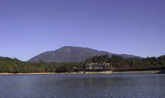
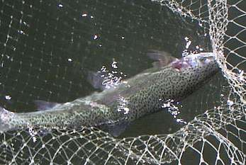

釣行日誌 故郷編
2003/10/24 友あり、遠方より来たりて遠方へ釣りにゆく
10月24日早朝、山々が霞の間から顔を出し秋晴れの日差しに輝き出す。玄関前に釣り具を積み上げ、はるばる浜松から来るＭ君を待つ。今日は彼と鱒釣りに出かけるのだ。
Ｍ君は中学校の同級生であり、中学卒業後は久しく連絡が絶えていたのだが、一昨年、僕がまだニュージーランドにいる頃に突然メールで連絡があり、フライフィッシングを始め、かなりの急傾斜で深みにはまりつつあるとのことだった。渓流釣りに必要なタックルの選び方など、出来る限りのアドバイスをメールで送ったのだが、その後彼がどのようにフライ釣りを楽しんでいるのか、また連絡が疎遠になっていたのである。
再び彼が連絡をくれたのは、この間の夏のことであった。彼が隣村にある彼の実家に帰省し、浜松の家に帰る途中、僕の家に立ち寄ってくれて懐かしい話に花が咲いた。で、じゃぁ釣りに行こうか！ ということになった。彼の車には常時フライベストからロッド数本からが積まれており、いつでも臨戦態勢であることが見て取れた。珍しい外国製メーカーの８番ロッドもあったりして、東京湾のスズキなどを狙って振りまくっていたとのことである。その後の彼の傾倒振りが見て取れた。
彼の車の音がしたので、いそいそと靴を履き、釣り具一式とボート釣り用の柄の長いタモを持ち出して彼の車に積み込む。挨拶もそこそこに、一目散に目的地に向けて走り出す。目指す山上湖までは、約２時間の道のりである。昔話はこのあいだ会ったときに済ませてしまったので、今日はひたすら釣りの話題で車中が盛り上がる。中学生の頃、彼と釣りをしたことはほとんど無いのだが、お互い40歳を過ぎてからフライの話に熱中できるのはいいものである。
紅葉の始まった峠を越え、トンネルを抜け、冷え冷えと流れる渓谷を渡り、ようやく釣り場に着いた。かなり寒くなると予想していたのだが、小春日和かインディアンサマーかというぐらいに晴れ渡った空からは心地よい日差しが降り注ぎ、かなり暖かくなりそうである。分厚い防寒着はやめて、フリースのジャケットの上に借りたライフベストを着込んだ。せかせかと釣り具を身に付け、足早にボート乗り場に向かう。久しぶりの釣りなので、水面を見た瞬間にスイッチが入ってしまい、目が△になってしまった。ゆっくりと支度をしているＭ君を後目に、レガッタのような勢いでボートを漕ぎ出した。

さて、どこをどうやって釣ろうか？
事前に川本君から入手した情報では、流れ込みのある入り江の周辺がいいだろうとのこと。この湖はけっこう広いので、いくら鱒が放流してあるといっても、ポイントを外すとまったくアタらないこともあるらしい。さらに、水温が低いので夏場を乗り切って自然に馴染んだ古参の鱒が多く、なかなか手強いとのこと。川本君のアドバイスを念頭に、波を蹴立てて入り江に向かう。水際から５メートルほど離れたラインまでを（寂しい）射程に捕らえられる位置にボートを止め、風が有利になる方向を確認してアンカーを降ろす。さてさて。
かの国のブラウンにはなかなかの効き目を見せたウーリーバガーや、トンガリロの暗闇で遡上レインボーを欺いた黒い大きなストリーマーもたくさん巻いてきたのだが、今日の穏やかな秋晴れの下では沈めたラインで攻撃的に水中を広く探る戦法を採る気分にはなれないので、フローティングラインの先端に、トンガリロ用に作ったドでかいインジケーターを付け、フナ釣りの心境でひたすらヤーンのゆらめきを見つめることに決めた。
第１投。おそらく水深３メートルほどのポイントに12番のビーズヘッドニンフを打ち込む。60cm離したドロッパーには14番のカディス・ピューパ風を結んだ。十分ウェイトを巻き込んだニンフは素早く沈んでゆき、大きなインジケーターを2/3ほど沈めて釣り合った。数分後、あのオレンジ色はピクピクと引き込まれれ、至福の一時が始まるのだ。
で。
２時間が経過した。度重なるキャストの繰り返しにも、インジケーターには何の反応も無い。向こうを釣っている他の人たちにも歓声は上がっていないようだ。なおもじっと、波間に漂うオレンジ色を見つめる。
すると不思議なことに、このボートには一人しか乗っていないのに、後ろの方で誰かがレジを打つ音が聞こえてくる。驚いて振り返ると、ジジジジと出てきたレシートには、
---- 本日の釣果 ----
レインボートラウト：0
ブラウントラウト ：0
タイリクホシスズキ：0
料金 3,990円（消費税込み）
１尾あたり単価：計算できません
などと印字されていた。
昼も近くなり、いやぁ、さすがにこれはちょっとヤバいんじゃないの？ という気になり、さっき一瞬ライズの見えた岬の突端を狙ってみることにする。ホールをしっかり効かせ、追い風参考のロングキャスト。沈みゆくティペット、姿勢を変えるインジケーター。
と。インジケーターの６～７メートル右側で、モコンッと水面が盛り上がった。
『うわ！ あんなところに出やがった！』
ライズを直撃！すべく慌ててラインを巻き取りにかかる。すると、ふとラインにグングンと脈動が伝わってきた。
『？？？』
『！』
急に動いたニンフに別の鱒が喰いついたのか、予期せぬヒットとなった。専門用語で言うところの「釣れちゃった」というやつである。まあ背に腹は替えられぬし、初めての魚の感触を驚きつつも楽しみながら、なかなかの引きを６番ロッドで堪える。船縁に寄せた銀色の魚体を、必殺海釣り用柄長タモですくうと、ヒレも綺麗なレインボーであった。レジの音が今度は水底から聞こえ、１尾あたり3,990円と響いて消えた。
１尾釣ったしさァこれから！ と意気込んだものの、やはり渋い状況は続き、もうすぐ午後１時になる頃になった。見えている範囲では、周囲のボートにも、あまり釣れている様子は無い。これはひょっとすると、狙っているポイントが浅いかな？と思われた。入り江の奥には小さいながらも沢が流れ込んでおり、実に魅力的な雰囲気に溢れているのだが、どうも魚の気配が無い。時折ライズが見られるのも、もう少し沖合の方である。湖底の地形を想像し、中央部に向かって深くなるあたりを狙うために、ボートをかなり沖合に泊めることにした。ニンフの位置ももう少し深くし、ドロッパーを大きめのニンフに付け替えた。
想定されるカケ上がりのあたりにニンフを振り込み、再び忍の一字でインジケーターを凝視する。
『アタレアタレアタレアタレ...............』
『ヒキコメヒキコメヒキコメヒキコメ...............』
『クイツケクイツケクイツケクイツケ...............』
実際の出力は微少かも知れないが、かなりの妄執エネルギーを注ぎ込んだ念波をインジケーターに送りつつ、コンビニで買い込んだパンをかじる。昼飯の時間も惜しいのだ。すると、オレンジ色が心なしか動いた。 「ピク」 あ！ これはなにかの兆しだな！ と思って見ていると、またピクピクと動く。ははぁ、やっこさん、口で突っついているな、用心用心......と心中密かにつぶやき、弛んだラインをたぐり寄せてストライクに備える。
「ピク.............ピク............ピクピク..............すぽん」
『そォ～れ！』
興奮のあまりまったくの大合わせだったのだが、しっかりと反動がロッドに伝わってくる。ラインを急いでたぐり込む。ギュギュギューンという最初の引き込みに続き、鱒の速い横走りにラインが水面を走る。カクン。
「ああぁ～！ 外れた！」
合わせが早かったのか食い込みが浅かったのか、なぜかフックが外れてしまった。力無く漂うラインを呆然と巻き取りながら、今のは大きかった！と、例外のない後悔を噛みしめる。ダレかにレジを打つ隙を与えないよう、もう一度今のポイントに打ち込む。すると、ニンフが沈んで間もないタイミングでまた、ピクピクとした反応がインジケーターに現れた。
「ピク.......ピク............」
『まだまだ..................』
「ピクピク.......ピク............ふっ」
きれいにヤーンが消し込まれ、水中で鱒が見せる捻転が伝わってくる。
『今度はやったぜ』
念のため、追い合わせを１回進呈し、さっきのよりは少し小振りと思われるレインボーの引きを楽しむ。さすがに長く居着いた古参鱒の引きはなかなかのものがあり、しかもスタミナがある。一度は船縁まで寄せたものの、またラインを引き出されてしまう。竿尻を肘に当て、鱒の逸走に耐える。ああ、懐かしのトンガリロの日々よ。
さすがの半野生レインボーも疲れを見せてきた。柄の長いタモは非常に便利であり、ボートに腰掛けたまま、なんなく魚体を取り込める。ネットの中で、優雅な煌めきが踊る。

この時間帯は、魚の活性が高くなったのか、あちこちでライズが出現し、遠くで釣っているＭ君のロッドも大きく曲がっている。ピクピクスポンのアタリも頻繁に出始めた。ヤマを張ったポイントは、それなりに魚の通過点・居着き場になっていたようで、その後、45cmというまずまずの型を加え、数回のバラシもあった。写真にとって額に入れておきたいような秋晴れの下でボートを浮かべ、旧い友人と共に竿を振り、鱒を狙う。こちらも長年の釣友の川本君の貴重な情報で、いくつかの綺麗な鱒を手にすることができた。友のありがたさが、手で触れるように確かなものに感じられた。
ふと、入り江の奥の流れ込みを見ると、モコリモコリと定期的なライズが散在している。お！これは気温が上がってきたから流れ込みに鱒が寄ってきたかな？ と色気を出し、いそいそとアンカーを引き上げ、ラインを巻き上げてから移動を開始した。通常の漕ぎ方では微妙なコース選定が難しいので、南島の釣りガイド、ブリントさん直伝の前向きボート漕ぎで密かに接近してゆく。依然ライズは頻繁に起こっている。しかも数が多い。めいっぱい岸よりにボートを進め、射程距離に入ったところで静かに止める。アンカーを降ろすときにゴトゴト音がするので、そのままで釣り始める。ニンフ＋インジケーターの仕掛けを長めのドライ用テーパーリーダーに結び直し、14番の薄いグレー色のCDCパターンを結ぶ。手が震える。
重たいニンフに較べてキャストは楽だが、精度を上げて慎重にライズの上に14番のドライを落とす。
「..............モコリ」
「！」
合わない。おかしいなあ？と思いつつ、再度のキャスト。ライズは続いている。
「..............パクリ」
「うわ！」
再三の合わせにも、まったくストライクできない。おかしいなぁと訝っていると、どうもライズの大きさが小さいような気がしてきた。遠目でしかも逆光だったので、誇張されて見えていたのかも知れないが、40cmの鱒が見せるライズに較べ、どうも小さい。しかも、頻繁にありすぎる。もしか？と動揺しつつ、さらにボートを近づけると、さっきから意味ありげなライズを繰り返しているのは、フナ、もしくはハヤ系の小魚らしかった。気温の上がった午後、入り江の奥の流れ込み、逆光で大きく見えたライズの波紋、持ち前のそそっかしさ などの諸要因がもとで、大きな勘違いをしたようである。ボートの接近に小魚の群れは姿を消し、静かな入り江の中で、またしても魚にダマされた人物は一人立ちつくすのであった。
その後、急に冷え込んできた午後５時近くに１尾かけたもののバラしてしまい、熱くなってキャストしているうちに山上湖は早い夕闇に包まれた。桟橋の方からボートを近づけて来たＭ君が、もう上がろうか？と言う。じゃぁこれで最後のキャストにしよう、と言いつつ振り込んだニンフを鱒がくわえることはなく、今日の釣りの終了となった。
濡れて冷たいロープを手繰ってアンカーを引き上げ、ボートを桟橋に向ける。はるか遠く、濃紺から漆黒へと変わりゆく空の下に、遠くの山の頂が、冷え冷えと聳えている。レジの前に座る誰かの気配は依然感じられたけれど、もう、あまり気にならなかった。
釣行日誌 故郷編 目次へ
サイトマップ
ホームへ
お問い合わせ